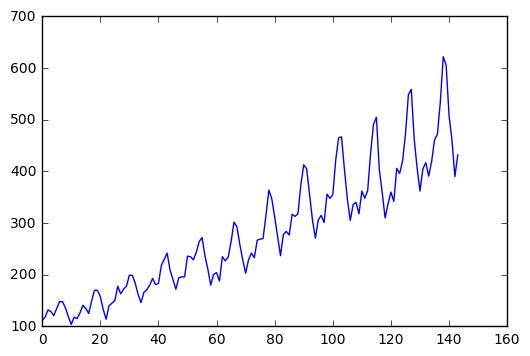
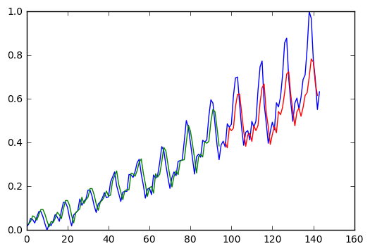

Рекуррентные нейронные сети
3. Рекуррентные нейронные сети (Recurrent neural network/RNN):
Следующий вид искусственных нейронных сетей используется для предсказания последовательностей. Данные сети "понимают" взаимосвязь между разными элементами сети. Например, их используют для генерации текстов чат-ботами. Работает это так:

В данном случае, сеть принимает последовательность "Привет, как дела?" и должна вывести: "Привет, нормально"
В медицине такие сети применяются для анализа медицинских записей, и предсказания по ним каких-либо будущих случаев , предсказания развития эпиприступа и.т.д.
Я продемонстрирую работу таких сетей на простом примере.
dataframe = pandas.read_csv('international-airline-passengers.csv', usecols=[1], engine='python', skipfooter=3)
dataset = dataframe.values
dataset = dataset.astype('float32')
dataframe.head()
| International airline passengers: monthly totals in thousands. Jan 49 ? Dec 60 | |
|---|---|
| 0 | 112 |
| 1 | 118 |
| 2 | 132 |
| 3 | 129 |
| 4 | 121 |
Набор данных включает в себя ежемесячные наблюдения за количеством пассажиров аэропорта с января 1949 по декабрь 1960. Всего имеется 144 наблюдения.
Если нарисовать график наблюдений, можно заметить определённую тенденцию:
-
Он цикличный, потому что наплывы пассажиров бывают в летний сезон.
-
Имеется положитлеьный тренд в общем количестве пасажиров, вездь популярность авиаперевозок постоянно растёт.
plt.plot(dataframe)

Нам нужно создать модель, которая будет способна найти взаимосвязи между количеством пассажиров в разные месяцы и предсказать количество пассажиров в будущем.
train_size = int(len(dataset) * 0.67)
test_size = len(dataset) - train_size
print(len(train), len(test))
(96, 48)
Для тренировки сети используются 96 наблюдений (67%), для проверки точности модели - 48 наблюдений.
Модель будет состоять из двух слоёв. Первый слой содержит всего 4 нейрона. Выходной слой - всего один нейрон, из которого будут "выходить" предсказанные количества пассажиров.
model = Sequential()
model.add(LSTM(4, input_dim=look_back))
model.add(Dense(1))
model.compile(loss='mean_squared_error', optimizer='adam')
Загрузим данные в модель:
model.fit(trainX, trainY, nb_epoch=5, batch_size=1, verbose=2)
Epoch 1/5
0s - loss: 0.0019
Epoch 2/5
0s - loss: 0.0020
Epoch 3/5
0s - loss: 0.0020
Epoch 4/5
0s - loss: 0.0019
Epoch 5/5
0s - loss: 0.0020
Оценим ошибку работы модели:
trainPredict = model.predict(trainX)
testPredict = model.predict(testX)
trainScore = math.sqrt(mean_squared_error(trainY[0], trainPredict[:,0]))
print('Train Score: %.2f RMSE' % (trainScore))
testScore = math.sqrt(mean_squared_error(testY[0], testPredict[:,0]))
print('Test Score: %.2f RMSE' % (testScore))
Train Score: 0.04 RMSE
Test Score: 0.11 RMSE
На тестовой выборке ошибка составила 0.11. Это значит, что модель в среднем ошибается на 11 тыс. пассажиров. Для того, чтобы понять, много это или нет, давайте визуализируем результат.

Итак, синим обозначен исходный график. Зелёное- это правильные предсказания на обученной выборке. Нас интересует красная чаcть - предсказания модели на тестовой выборке. Мы видим, что модель примерно угадывает годовые циклы и общий тренд.
Вот так работают рекуррентные нейронные сети. Ещё раз повторюсь- это очень простой пример для иллюстрации. Например, для анализа медицинских записей используют более глубокие сети. Также, для повышения точности предсказаний их можно объекдинить со свёрточными нейронными сетями, описанными в прерыщей главе.